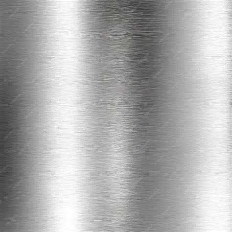
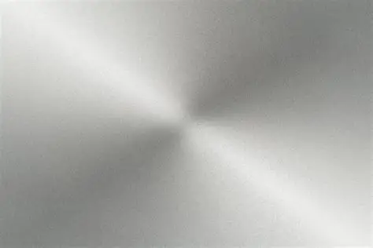
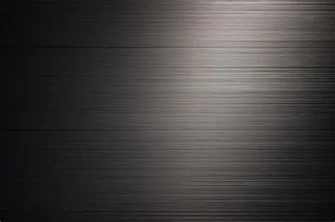
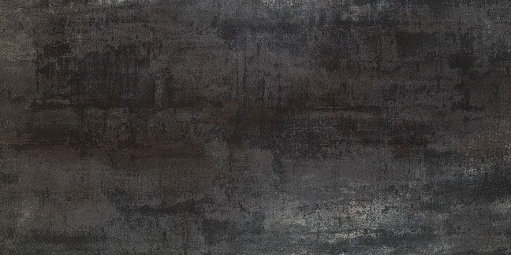
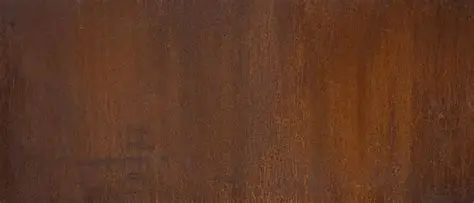
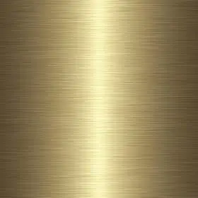
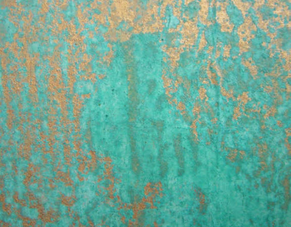
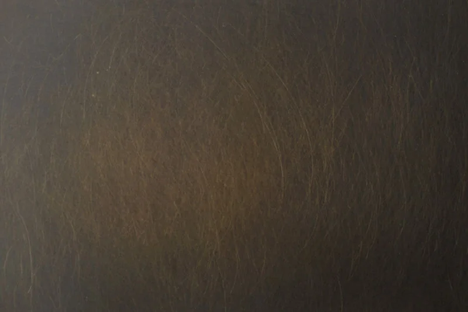
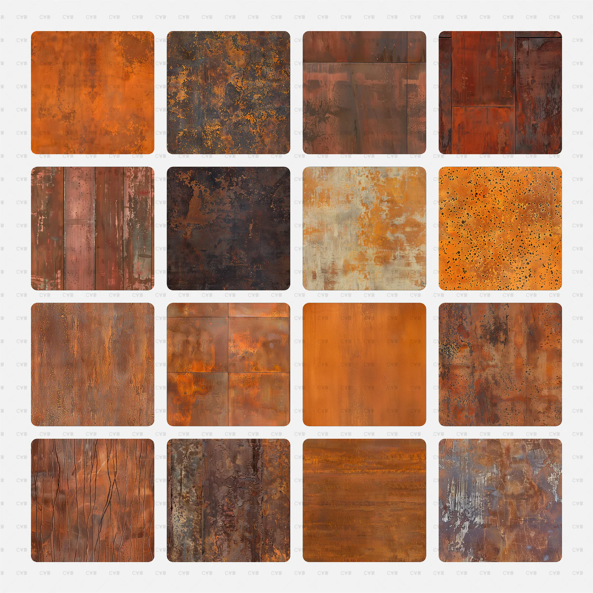

Materiali disponibili
Acciaio Inox
Finitura Satinato, Lucido e
Brunito.
Resistente alla corrosione, ideale
per ambienti esterni e design moderni.

Satinato
Lucido
BrunitoAcciaio Corten
Materiale vivo, con ossidazione controllata che dona carattere e unicità.

Brunito
MedioOttone
Finitura Satinato, Lucido e Brunito.
Leghe e
finiture particolari per progetti esclusivi e
personalizzati.

Satinato
Ossidato
BrunitoPerché scegliere TEMA
- ✔ Materiali certificati
- ✔ Resistenza agli agenti atmosferici
- ✔ Finiture di alto livello
- ✔ Progetti personalizzati
- ✔ Lavorazioni artigianali
Tavolozze Acciaio Corten

Ossidazione Leggera

Ossidazione Media

Ossidazione Profonda
Tavolozze Ottone

Extra Satinato

Ossidato

Brunito Scuro